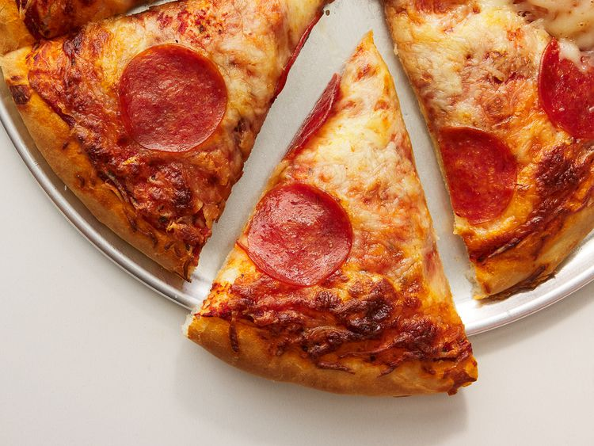

Pepperoni Pizza

Description
This pepperoni pizza recipe produces a quick and easy classic! Delicious homemade pizza crust and tomato sauce have never been easier.
Ingredients
- half cup water
- half (12 ounce) can CONTADINA Tomato Paste
- 1 teaspoon dried oregano, crushed
- 1 teaspoon dried basil, crushed
- half teaspoon garlic powder
- half teaspoon onion powder
- half teaspoon sugar
- half teaspoon salt
- quarter teaspoon salt
Steps
- Preheat the oven to 425 degrees F (220 degrees C). Grease two 12-inch pizza pans.
- Make sauce: Whisk together water,
tomato paste, oregano, basil, garlic powder, onion powder, sugar, salt, and pepper in a
medium bowl until smooth. Set aside.
- Make crust: Combine 2 cups flour, yeast, sugar, and salt in a large bowl. Add warm water and oil; mix until well blended,
about 1 minute. Gradually add remaining flour, a little at a time, until a soft, sticky dough forms.
- Transfer dough to a floured surface; knead until dough is smooth and elastic, about 4 minutes. Add more flour as needed.
(If using RapidRise yeast, let dough rest, covered, for 10 minutes.)
- Divide dough in half. Lightly flour your hands, then pat each piece of dough onto the prepared pizza pans.
- Top dough with sauce, cheese, and pepperoni.
- Bake in the preheated oven until crusts are browned and cheese is bubbly, 18 to 20 minutes.
Rotate pizza pans between the top and bottom oven racks halfway through baking.